Captured from the live swifthorizon.com.gh at 1440 w, sliced into
one file per section. Three candidate orderings are built from the same tiles —
only the sequence changes. Click any image to open it full size.
→ Before / after — the dark/light ground rebalance (commit 1bae6a6)
→ Drag & reorder board — build your own order here
Act 1 is the place (problem → mechanism → operations → capsule → village). Act 2 is the investment (modular → numbers → network → proof → diaspora → ask). Matches how a buyer actually decides: want to live here, then does it work. Cost: the I–IV movement spine needs re-labelling.
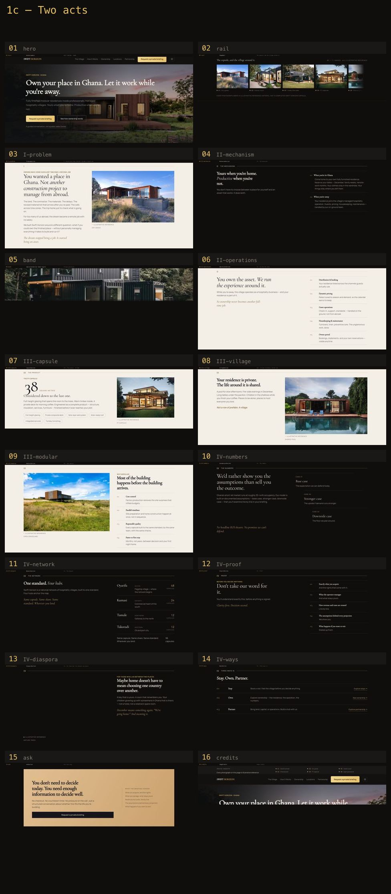
Drops AcquireSection (“Proof”) entirely, because the Ask card already
lists the identical five points. The flat tail becomes Numbers → Network → Diaspora →
Ways → Ask, which escalates instead of repeating. Cost: loses the
“don’t take our word for it” beat.
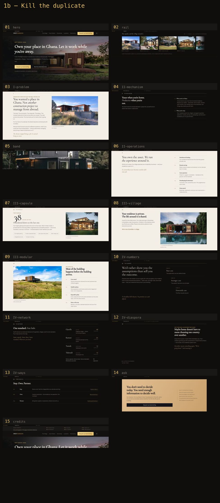
Keeps everything, pulls Numbers + Network up to sit right after the mechanism so a qualified buyer knows within two screens whether this is investable. Cost: the product lands late, so the emotional P7 beat arrives after the commercial case.
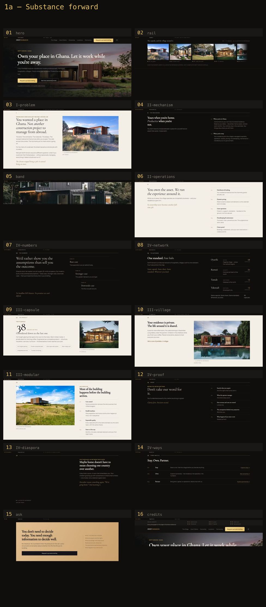
Straight read of what ships today.
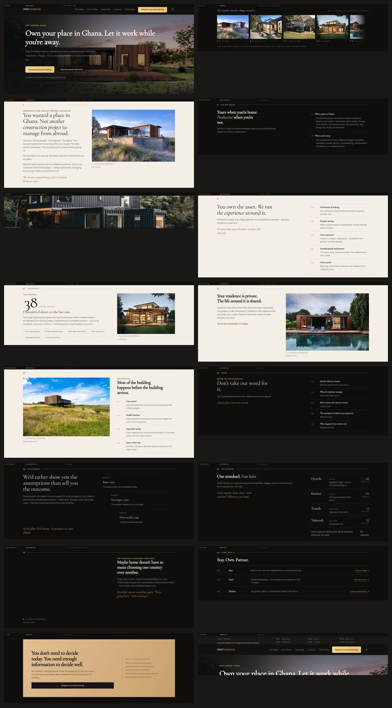
Click any tile for the full-resolution section.
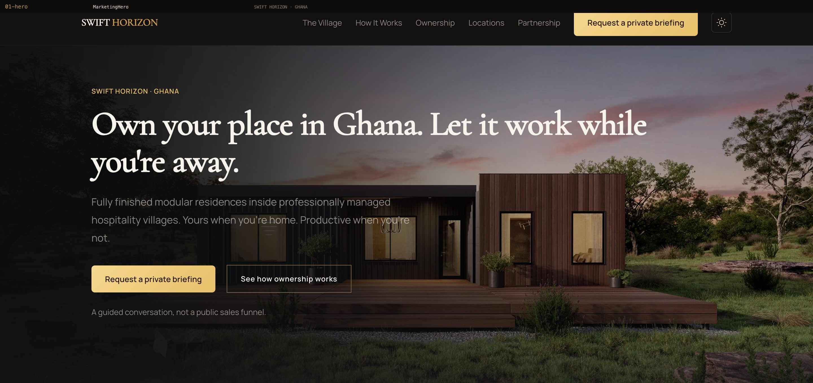
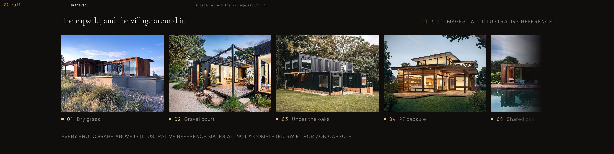
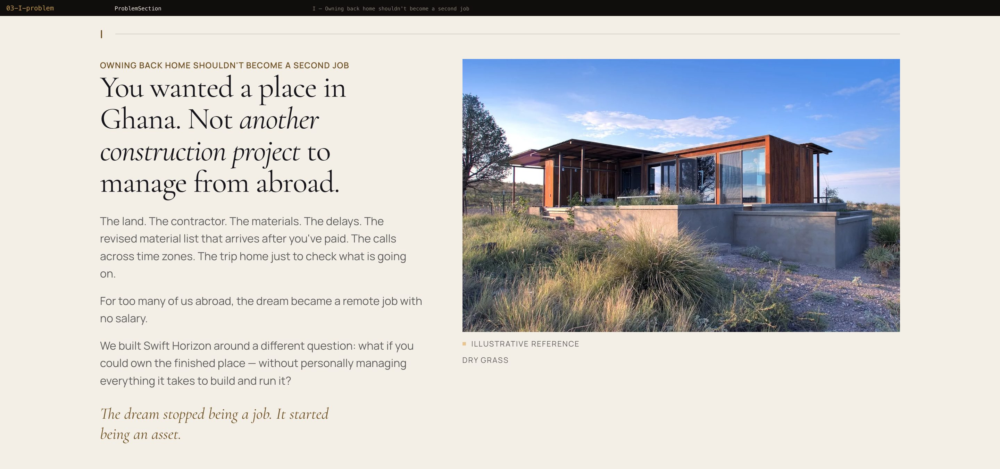
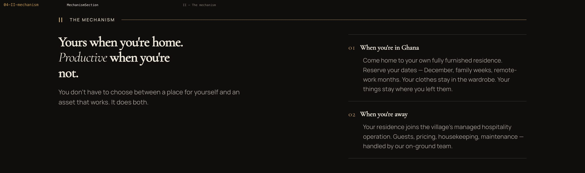
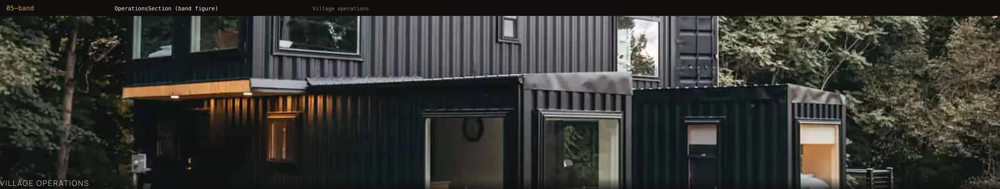
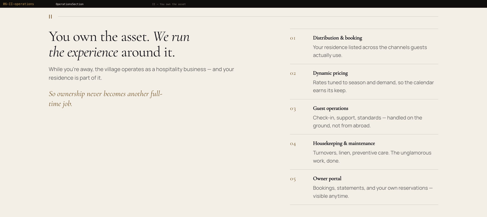
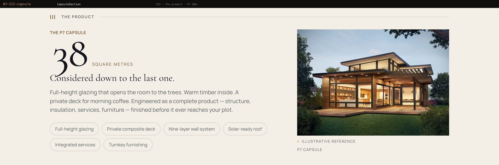
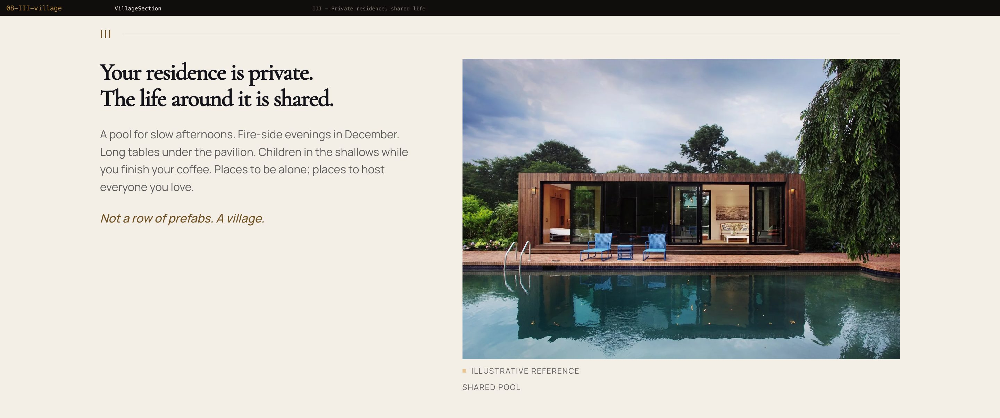
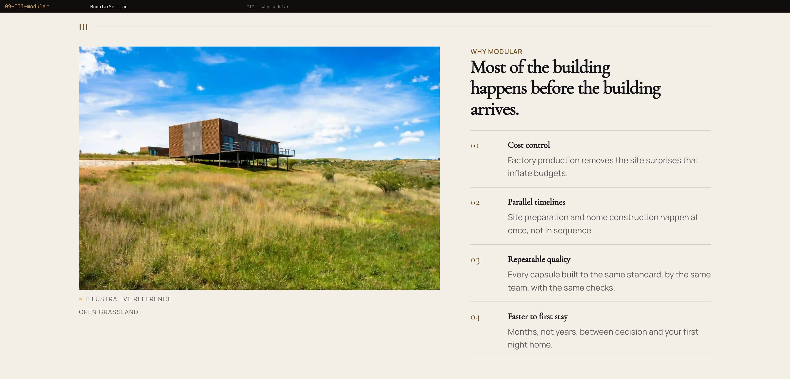
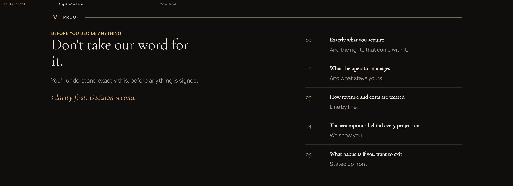
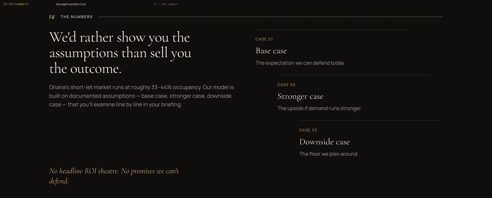
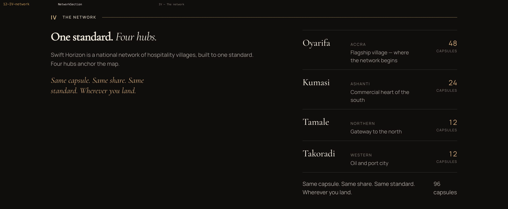
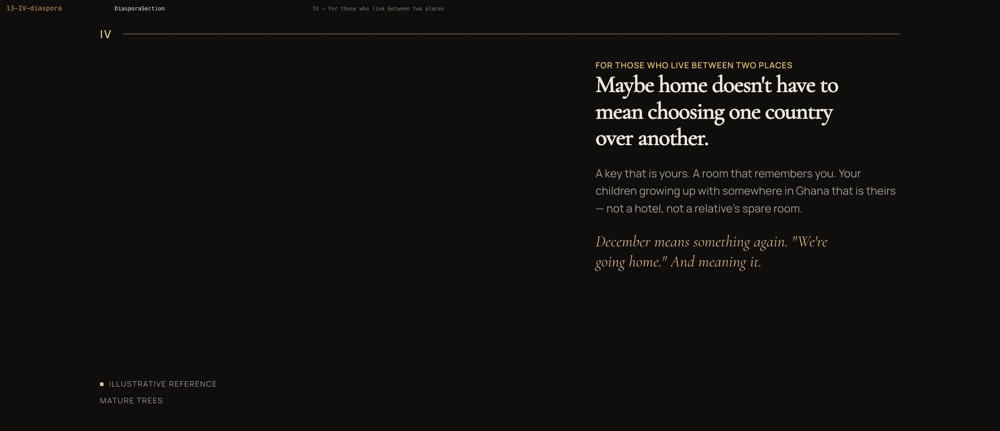
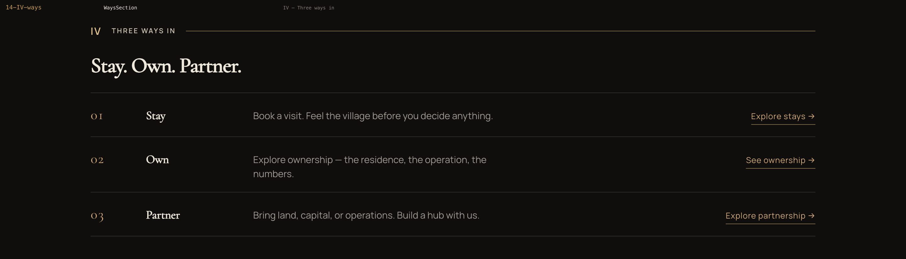
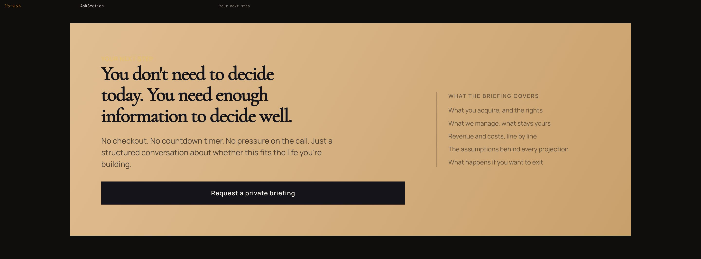